完整功能说明
本文档覆盖插件全部用户可见功能，含界面截图逐步标注。左侧目录可快速跳转；上方搜索框可查找任意功能关键词。
1安装与更新
- 下载最新版：打开百度网盘（提取码
1234），下载 zip 并解压到固定目录（内含manifest.json）。也可在历史版本页点击「下载最新版」。 chrome://extensions/→ 开启开发者模式 → 加载已解压的扩展程序。- 访问 Temu 商品详情页，确认出现右侧「Temu 收藏夹」侧栏与「收藏商品」悬浮按钮。
- 更新：下载新版 → 扩展页点「重新加载」或重新加载文件夹。
2验证码与会员
验证流程
- 首次进入采集页弹出「验证」窗口，记录用户 ID（10 位数字，可点复制按钮）并办理验证码。
- 输入验证码 →「确认」；「获取验证码 →」跳转办理页；「联系客服」扫码咨询。
- 点击侧栏会员 badge 查看到期时间、用户 ID，可「续费 / 升级」。
- 输入
FREE3DAYS可体验 1 天青铜（每设备一次）。
| 档位 | 每日采集点 | 极鲸云 | 卖家后台阈值 |
|---|---|---|---|
| 体验档 | 20 点 | 5 次/天 | 不可用 |
| 青铜 | 200 点 | 按验证码 | 可用 |
| 黄金 | 550 点 | 按验证码 | 可用 |
| 钻石 | 无限制 | 按验证码 | 可用 |
★图文指引（按界面截图对照）
以下截图对应插件最常用界面。建议顺序：Temu 页收藏商品 → 侧栏选模式并发布 → 齿轮 ⚙️ 功能设置 → 按需配置飞书 / AI 模型。
| 图号 | 截图 | 对应章节 |
|---|---|---|
| 图 1 | 侧栏 + Temu 页「收藏商品」 | 侧栏总览 · 采集 · 发布 |
| 图 2 | 功能设置 · 图片 / 产品 / 价格倍率 | 图片 / 产品选项 |
| 图 3 | 功能设置 · 平台开关 / 汇率 / 其他 | 价格 / 汇率 · 其他设置 |
| 图 4 | 功能设置 · AI 智能优化 | 智能优化 AI |
| 图 5 | 功能设置 · 发布选项 | 发布选项 |
| 图 6 | 功能设置 · 默认属性 / 亚马逊 | 默认属性 / 亚马逊 |
| 图 7～9 | 飞书表格配置（三标签页） | 飞书表格配置 |
| 图 10～14 | AI 模型配置（入门 / 文字 / 图片 / 扩展工具 / 高级；视觉标签无独立截图） | AI 模型配置 |
| 图 15 | 店小秘 · 待发布 / 发布失败 / 在线产品 | 店小秘状态对照 |
3侧栏总览（Temu 收藏夹）
在 Temu 商品页左下角点击「收藏商品 ↑」将商品加入右侧「未导出商品」列表；侧栏是采集、编辑与发布的主控制台。
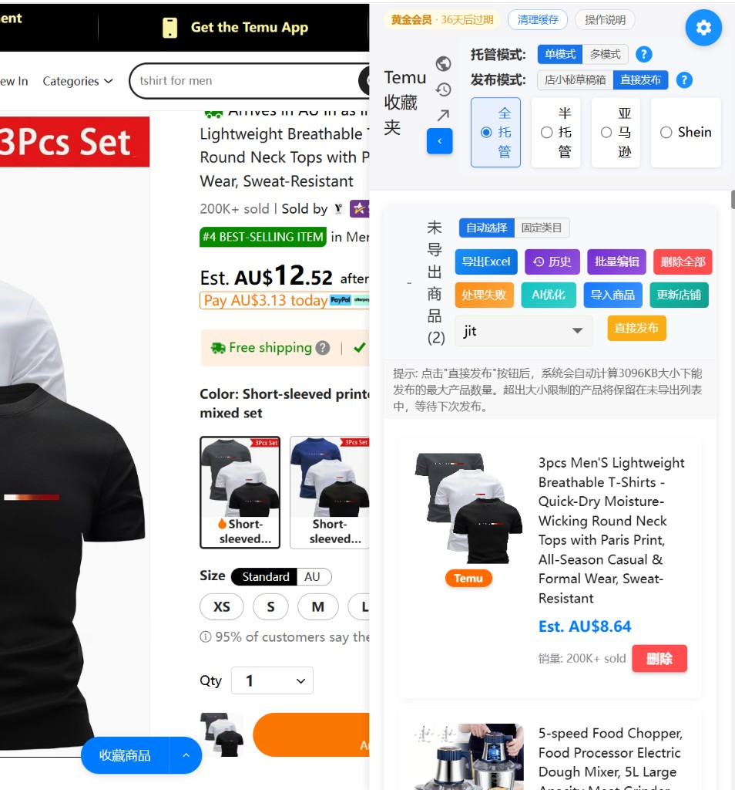
1 2 3 4 5 6 7 8 9 10 11- 1收藏商品 — Temu 详情页左下角蓝色悬浮按钮，点击开始采集当前商品。
- 2会员状态 — 如「黄金会员 · 36 天后过期」；点击查看详情、用户 ID、续费。
- 3清理缓存 / 操作说明 — 无法访问 Temu 前台时先清理缓存；「操作说明」打开本站点。
- 4齿轮 ⚙️ — 打开「功能设置」面板（图 2～6 均在此面板内）。
- 5托管模式 — 单模式每次只选一个平台；多模式可同时勾选多个平台并行发布。
- 6发布模式 — 店小秘草稿箱先存草稿；直接发布提交到所选店铺。
- 7平台卡片 — 全托管 / 半托管 / 亚马逊 / Shein，当前选中项有蓝色边框。
- 8未导出商品 (N) — 已采集、尚未导出的列表；工具栏有自动选择与固定类目。
- 9功能按钮区 — 导出 Excel、历史、批量编辑、删除全部、处理失败、AI 优化、导入商品、更新店铺。
- 10店铺下拉 + 直接发布 — 选择目标店铺后点橙色「直接发布」；系统按约 3096KB 体积上限自动计算本批可发数量，超限商品留在未导出列表等待下一批。
- 11商品卡片 — 显示缩略图、标题、价格、销量；右侧「删除」可移出列表。
其他侧栏入口
- 🌐 共享选品库 — 云端共享商品库浏览与导入
- 🕐 1688 查询历史 — 图搜 1688 / 亚马逊商标检查历史
- ↗ 类目映射 — Temu / Shein / 亚马逊类目 ID 互查
- 全部恢复 — 已导出列表可批量恢复至未导出
- 折叠按钮 — 收起侧栏；左侧「展开收藏夹」可再打开
- 拖拽左边缘 — 调整侧栏宽度
- 未导出 / 已导出 — 两个折叠列表区，采集先进未导出
页面辅助功能
- Temu 回到顶部 — 消费者端 Temu 页右下角浮动按钮，长列表快速回顶（与侧栏位置自动避让）
- 侧栏回到顶部 — 侧栏内容区滚动较深时，侧栏内也会出现回顶按钮
- 设置齿轮触发条 — 页面右侧边缘有一条细竖条，点击可显示/隐藏「功能设置」齿轮按钮（齿轮被隐藏时使用）
- 无法访问页提示条 — 跳转到
bgn_no_access等受限页时，页面底部显示黄色提示条，引导清理缓存 / 开 VPN / 查看操作说明 - ESC 键 — 优先关闭商品详情、功能设置等弹层，再折叠侧栏（详见快捷键）
- 扩展调试日志 — 功能设置中开启后，控制台输出
[采集助手]前缀日志，便于排查问题
单品 / 列表页采集
商品详情页
- 打开 Temu 商品详情页，点击左下角「收藏商品 ↑」悬浮按钮（见图 1）。
- 采集中显示进度，成功后 toast 提示，商品进入侧栏「未导出商品」。
- 每采集 1 个商品消耗 1 点（钻石会员不限）。
- 若开启「采集时自动」AI 选项，采集完成后自动执行标题重写 / 背景替换等。
Temu 列表 / 搜索页
- 列表每个商品卡片上注入「+ 采集」按钮，无需进详情即可采集。
- 已入库显示「已采集」；重复采集会询问是否覆盖。
- 极鲸云 API 快速采集 — 若已配置极鲸云 Token 且会员允许，列表页「+ 采集」会直接调用极鲸云 API 拉取完整商品数据入库（比打开详情页更快）；未配置 Token 时提示去多链接面板「🔑 获取 Token」。
1688 / Shein / 亚马逊等
在对应平台商品页同样显示「收藏商品」与侧栏，采集流程一致，发布时按所选托管模式处理。
1688 / 多平台采集说明
| 平台 | 采集入口 | 发布方式 |
|---|---|---|
| Temu 前台 | 悬浮按钮 / 列表「+ 采集」/ 多链接批量 | 全托管 / 半托管 |
| 1688 详情页 | 「收藏商品」 | 按托管模式导出；已导出筛选可识别 1688 来源 |
| Shein | 「收藏商品」 | Shein 托管（多草稿） |
| 亚马逊 | 「收藏商品」 | Excel / 模板填充 / 店小秘亚马逊 |
| 极鲸云 GeekBI | 极鲸云 API + 批量保存 | 见「极鲸云 / GeekBI」章节 |
多链接批量采集
入口：悬浮「收藏商品」旁的向上箭头 → 打开「多链接批量采集」面板。
- 链接输入区 — 每行一条链接；支持完整 URL、纯 goods_id、goods_id= 格式
- 抓取当前页 — 从当前 Temu 列表页抓取商品链接
- 导入表格 — 从 Excel / CSV 导入链接列表
- 采集后自动保存链接 — 完成后保存链接到本地
- 仅采集页面数据 — 只解析 DOM，不调用 Temu 内部 API（更稳、稍慢）
- 随机等待时间 — 每条完成后随机等待 N～M 秒，降低风控（建议 ≥12 秒）
- 筛选条件 — 销量、评论率、评分、价格区间、售出率等（仅「抓取当前页」生效）
- 🚀 开始批量采集 / 停止采集 — 显示进度、当前 URL、实时日志
- 链接管理 — 保存 / 复制 / 清空链接；可设每次复制数量、跳过已复制
- 📋 抓取历史 — 查看历史抓取记录
- ❓ 格式帮助 — 支持的链接格式说明
抓取当前页 · 筛选条件（全部）
仅在使用「抓取当前页」时生效，手动粘贴链接批量采集时不生效。
| 条件 | 说明 |
|---|---|
| 销量 > | 最低销量 |
| 销量 < | 最高销量（可选） |
| 评论率 < | 评论率上限（%） |
| 评分 > | 最低评分 |
| 评论数 > | 最低评论数 |
| 价格 < / 价格 > | 价格区间 |
| 售出率 > | 最低售出率（%） |
采集中进度面板
- 显示当前进度 x / 总数、百分比进度条
- 显示当前处理 URL与已用时间
- 实时日志 — 每条成功 / 失败记录，含跳过已入库提示
链接管理（折叠区）
- 每次复制数量 — 批量复制链接时的条数上限
- 跳过已复制项 — 复制时忽略已复制过的链接
- 💾 保存链接 — 持久化到浏览器存储
- 📋 复制链接 — 按设置数量复制到剪贴板
- 🗑️ 清空 — 清空已保存链接（不可恢复）
- 🔄 重置状态 — 清空「已复制」标记，不删链接本身
极鲸云 / GeekBI 采集
在多链接面板勾选「极鲸云接口采集」，通过极鲸云 API 拉取全量商品数据，无需逐个开标签页。
- 🔑 获取 Token — 多链接面板标题栏配置极鲸云 Token（必填）
- GeekBI 页面自动提取 — 登录
geekbi.com后，扩展会自动扫描 localStorage / Cookie 中的 Token；也可在 AI 设置 → 扩展工具手动粘贴 - 体验档 — 极鲸云 5 次/天；钻石会员按验证码配置次数（100～20 万/天或不限）
- GeekBI 站点 — 在 geekbi.com 可配合极鲸云批量保存商品到选品流程
- Token 持久化 — 可通过功能设置「导入 / 导出全部」或 AI 设置「导出配置」备份 Token
- 批量标签页采集 — 非极鲸云模式下，后台可自动跳转商品页采集并返回列表（由多链接批量触发）
商品详情弹窗
点击侧栏任意商品卡片打开详情，可编辑后再发布。
基础信息
- 标题 / 价格 / 销量 — 点击字段可直接 inline 编辑
- 查看商品页面 — 底部按钮在新标签页打开原始商品链接
- 商品详情 HTML — 可查看并编辑采集到的详情描述区域
- 属性列表 — 支持新增、删除、折叠展开各属性行
图片与视频
- 多颜色轮播切换 — 分色 / 单色服装切换轮播图
- 编辑图片 / 替换图片 — 打开图片编辑器（裁剪、马赛克等）
- 下载单张 / 下载全部 — 保存主图到本地文件夹
- 选择保存位置 — 持久化下载目录
- AI 去水印 — 单张主图 / 型号图去水印（需 AI 配置）
- 移除图片 / 移除视频 — 从商品中删除
- 视频下载 / 新窗口打开 — 处理防盗链视频
规格与类目
- + 添加规格 / + 添加规格值 — 手动增删 SKU
- 查询 1688 同款 — 以规格图搜索 1688 同款
- 选择类目 — 手动指定 Temu / Shein / 亚马逊类目
包装与半托管
- 包装方案下拉 — 选择已保存的包装预设
- 修改保存 — 覆盖当前方案
- 保存为新方案 — 另存为新预设名
- 设为默认 — 新商品默认套用该方案
- 删除方案 — 删除不需要的预设
- 包装尺寸 / 形状 / 类型 — 长宽高、重量、硬软包装
- 经营站点 — 半托管可搜索选择国家站点
- 发货时效 / 库存 — 半托管承诺天数与库存数量
- 半托管仓库绑定 — 显示仓库绑定状态
尺码指南
服装等类目若采集到尺码表，详情中显示尺码指南区域：可在「身体测量 / 商品尺寸」Tab 间切换，含模特试穿信息与表格数据。
图片编辑器
「编辑图片」打开独立编辑器，保存后写回商品主图。主要功能：
- AI 抠图 / 白底图 — 智能去背景；白底图需先抠图再换背景
- 裁剪 / 旋转 / 翻转 — 基础几何调整
- 马赛克 / 模糊 / 画笔 — 局部涂抹遮挡
- 文字 / 形状 / 标尺 — 标注与测量
- 滤镜效果 — 多种图像滤镜
- 调整尺寸 — 修改输出像素尺寸
- 撤销 / 重做 —
Ctrl+Z/Ctrl+Y；Ctrl+滚轮缩放，Ctrl+拖拽平移画布
亚马逊模式
详情中可查看 AI 生成的描述 / 五要点 / 关键词，支持翻译为中文预览；模板填充与发布时会使用这些数据。
底部「保存修改」将编辑写回本地商品数据。
托管模式与发布方式
| 托管模式 | 说明 |
|---|---|
| 全托管 | Temu 全托管，导出 Excel 或店小秘直接发布 |
| 半托管 | Temu 半托管，需配置仓库 / 站点 / 运费 |
| 亚马逊 | 导出 Excel、模板填充、店小秘亚马逊发布；不支持自动发布 |
| Shein | Shein 全托管（目前以草稿为主） |
- 单模式 — 每次只选一个平台
- 多模式 — 勾选多个平台，发布时并行提交
- 店小秘草稿箱 — 保存草稿，稍后人工检查发布
- 直接发布 — 提交后直接发布到所选店铺（Temu / Shein 等）
- 选择店铺 — 未导出列表上方下拉框，支持多选 / 全选
- 自动选择 / 固定类目 — 自动匹配或指定 Temu / Shein / 亚马逊类目
- 固定属性(N) — 固定类目下配置属性默认值，留空则发布时随机
固定类目与固定属性
类目模式切换
未导出列表工具栏：自动选择（按采集数据智能匹配） / 固定类目（始终用指定类目）。
- 切到「固定类目」→ 点「选择」打开类目树形选择器（支持搜索）。
- 选定后工具栏显示类目名称；Temu / Shein / 亚马逊各自独立记忆。
- 点「固定属性(N)」打开属性配置弹窗：带 * 的必填属性可指定固定值，留空则发布时自动随机。
店铺多选
店铺下拉支持全选 / 取消全选多店铺；仅一个店铺时会自动选中并记忆。
发布 / 导出主操作
| 按钮 | 作用 |
|---|---|
| 直接发布 / 保存草稿 | 主发布按钮；直接发布时按约 3096KB 上限自动计算本批数量 |
| 导出 Excel | 按当前托管模式导出店小秘格式 xlsx |
| 多模式发布 | 多模式下次提交到所有选中平台 |
| 模板填充 | 亚马逊：上传 Excel 模板，AI 填充后下载 |
| 发布（亚马逊） | 一键发布到店小秘亚马逊 |
| 检查 | 亚马逊：AI 检查标题 / 型号 / 轮播图商标侵权 |
| 删除 / 恢复 | 单条从未导出删除或从已导出恢复 |
| 删除全部 / 全部恢复 | 批量清空或恢复列表 |
侧栏「已导出商品」支持多条件筛选与排序，完整字段说明见已导出商品筛选章节。
店小秘商品状态对照
使用插件「保存草稿」或「直接发布」后，商品会进入店小秘对应模块。打开店小秘 → 顶部 产品 → 选择平台（Temu 全托管 / 半托管、亚马逊、Shein 等），左侧栏三个区域含义如下：
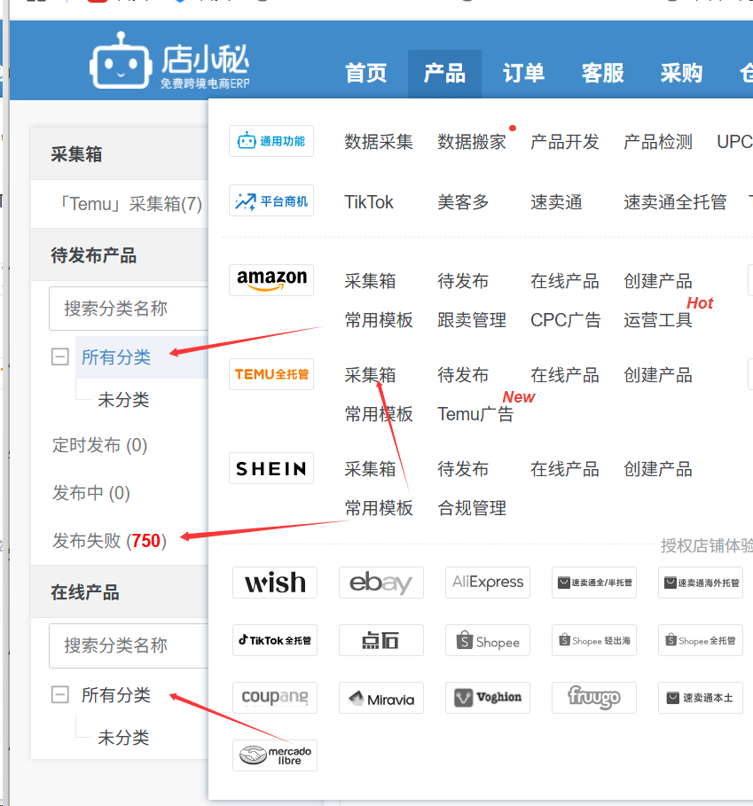
1 2 3- 1待发布产品 → 所有分类 = 草稿箱 — 插件选择「店小秘草稿箱」模式发布的商品会出现在这里；尚未提交到 Temu / 亚马逊等平台，可继续编辑后再发布。
- 2发布失败 — 已尝试发布但因类目、属性、图片、价格等原因被平台驳回的商品；括号内数字为失败条数。侧栏可点「处理失败」拉取失败记录并重试。
- 3在线产品 → 所有分类 = 发布成功 — 已成功提交到平台、处于在线状态的商品；即发布成功后的最终位置。
| 店小秘左侧栏 | 含义 | 插件侧栏对应操作 |
|---|---|---|
| 待发布产品 · 所有分类 | 草稿箱（未提交平台） | 发布模式选「店小秘草稿箱」→ 保存草稿 |
| 发布失败（带数量） | 发布被驳回 | 「处理失败」→ 查看原因并重试 |
| 在线产品 · 所有分类 | 发布成功、已在线 | 发布模式选「直接发布」→ 直接发布 |
已导出商品筛选
侧栏「已导出商品」区域 → 点击筛选按钮展开筛选面板，可快速定位历史导出记录。
| 筛选项 | 说明 |
|---|---|
| 平台 | 全部 / 当前模式 / Temu / 亚马逊 / 1688 / Shein / AliExpress / Alibaba / 其他 |
| 来源 | 导出 Excel / 直接发布 / 亚马逊发布 / 模板填充 / 未标记 |
| 关键词 | 匹配标题、URL、商品 ID、类目 ID |
| 店铺 | 店铺名称或 ID |
| 类目 ID | 精确匹配类目 |
| 图片 / SKU | 有 / 无 |
| 价格 / 销量 | 区间范围 |
| 导出时间 | 起止日期 |
| 排序 | 导出时间、价格、销量、标题 A-Z 等 |
点应用筛选生效；重置清空条件。筛选状态下「删除全部」「全部恢复」仅作用于当前筛选结果。
从店小秘导入商品
未导出列表 → 导入商品（需已登录店小秘，部分功能需付费会员）。用于把店小秘在线商品拉回插件侧栏继续编辑或二次发布。
- 点击「导入商品」打开弹窗。
- 方式 A · 按 ID 查询 — Temu / 全半托管填 SKC（多个可用逗号、空格或换行分隔）；Shein 模式填 SPU ID。插件会调用店小秘 API 查询并解析 Excel 详情。
- 方式 B · 拖入 Excel — 将店小秘导出的
.xlsx / .xls拖入虚线区，或点击选择文件直接解析。 - 导入完成后显示新增 / 更新 / 跳过数量，商品进入「未导出商品」列表。
批量工具概览
- 批量编辑 — 见下节「批量编辑字段」
- AI 优化 — 对未导出商品执行已启用的 AI（需先勾选「启用」）
- 处理失败 — 从店小秘「发布失败」列表拉取失败记录并重试
- 导入商品 — 见从店小秘导入章节
- 更新店铺 — 同步店小秘店铺列表
亚马逊模板填充（步骤）
- 亚马逊模式 →「模板填充」→ 上传 Excel 模板
- 配置工作表 / 表头行 / 数据起始行 → 预览 → 填充并下载
批量编辑字段明细
未导出 → 批量编辑：勾选字段填值 →「应用」，对全部未导出商品生效。
| 分组 | 字段 |
|---|---|
| 类目 | 类目 ID（可打开选择器） |
| 包装 | 长/宽/高(cm)、重量(kg)、形状、类型 |
| 库存发货 | 库存、发货时效(天) |
| 标题 | 前缀、后缀、查找替换 |
| 价格 | 缩放倍数、固定价格 |
亚马逊商标检查
亚马逊模式 → 「检查」：批量检测标题、型号、轮播图商标风险（AI）；结果保存在 1688 历史窗口「商标检查」Tab，可导出 CSV。
导出历史
未导出列表点「历史」打开导出历史窗口。
- 卡片 / 表格视图 — 查看 Excel、模板填充等导出记录
- 筛选 — 按类型、托管模式、时间过滤
- 搜索 — 文件名、标题等关键词
- 重新导出 — 用历史数据再次导出
- 恢复产品 — 恢复为未导出状态
- 复制列 — 表格视图表头点击复制整列
- 清空历史 / 删除单条
图片处理 / 产品信息选项
齿轮 ⚙️ → 功能设置，向下滚动至「图片处理选项」与「产品信息选项」。右上角全选可一键勾选本区全部项；每项旁 ? 可查看详细说明。
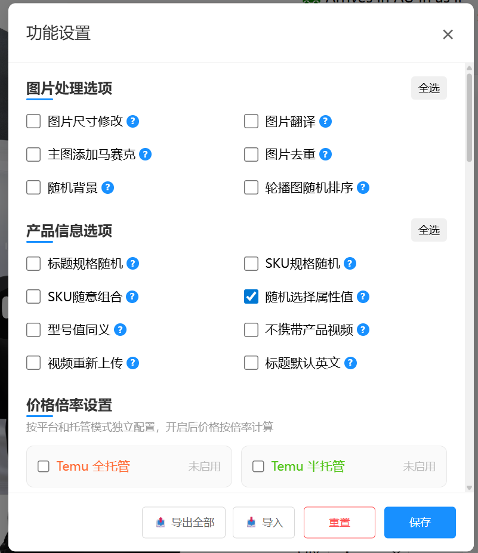
1 2 3- 1图片处理选项 — 采集 / 发布前对轮播图批量处理，勾选后在导出或发布时自动执行。
- 2产品信息选项 — 对标题、SKU、属性值做随机化或规范化，降低重复度、提高过审率。
- 3价格倍率设置 — 按「Temu 全托管 / 半托管」等平台独立配置；卡片显示「未启用 / 已启用」，点击卡片进入倍率编辑。
图片处理（逐项说明）
- 图片尺寸修改 — 采集时调整为平台合适尺寸（如 800×800）
- 图片翻译 — OCR + 翻译图片内文字（需配置翻译 API）
- 主图添加马赛克 — 遮挡 logo / 敏感区域
- 图片去重 — 删除相似重复轮播图
- 随机背景 — 替换随机背景
- 轮播图随机排序 — 打乱轮播顺序
产品信息（逐项说明）
- 标题规格随机 — 标题内规格顺序随机化
- SKU 规格随机 — SKU 排列随机
- SKU 随意组合 — 自由组合颜色/尺寸生成新 SKU
- 随机选择属性值 — 店小秘带 * 必填属性：优先默认配置 → 唯一选项自动选 → 同义词 / 随机
- 型号值同义 — 型号等同义词替换
- 不携带产品视频 — 采集时忽略视频
- 视频重新上传 — 下载后上传自有存储
- 标题默认英文 — 中文标题自动译英
价格倍率 / 汇率 / 平台开关
在功能设置中继续向下滚动，可见各平台启用开关、汇率换算与其他快捷按钮。
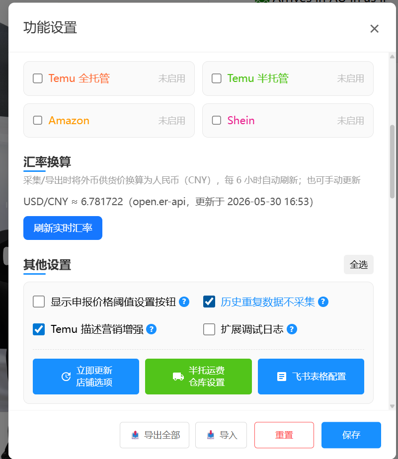
1 2 3 4 5 6- 1平台启用 — Temu 全托管 / 半托管 / Amazon / Shein 四个复选框；未启用的平台不会在侧栏平台卡片中生效。
- 2汇率换算 — 采集 / 导出时将外币供货价换算为人民币（CNY）；约每 6 小时自动刷新，也可点刷新实时汇率手动更新。
- 3其他设置 — 申报价格阈值按钮、历史去重、描述增强、调试日志等；默认建议保持「历史重复数据不采集」与「Temu 描述营销增强」开启。
- 4立即更新店铺选项 — 同步店小秘店铺列表（与侧栏「更新店铺」相同功能）。
- 5半托运费 / 仓库设置 — 配置半托管国家、仓库与运费模板，详见半托仓库章节。
- 6飞书表格配置 — 核价 / 采集数据同步飞书，详见飞书章节。
- Temu 全托管 / 半托管 / Amazon / Shein 倍率 — 各平台独立开关；固定倍率或随机范围（入口在图 2 价格倍率卡片）
- 汇率换算 — 显示当前 USD/CNY 等汇率与数据来源、更新时间
- 刷新实时汇率 — 手动刷新汇率
智能优化功能（设置内）
功能设置 → AI 智能优化功能区域。每项卡片有启用复选框；部分项另有「采集时同步执行」的上项勾选。改后须点底部保存。
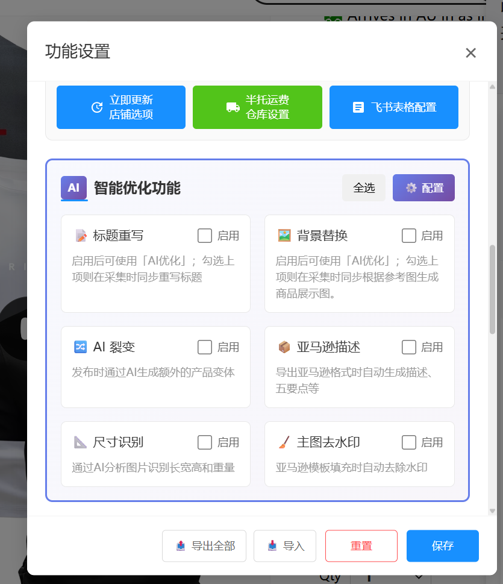
1 2 3 4 5 6 7- 1标题重写 — 启用后侧栏「AI 优化」可用；勾选上项则采集完成时同步重写标题。
- 2背景替换 — 启用后可用 AI 优化；勾选上项则采集时按参考图生成展示图。
- 3AI 裂变 — 发布时通过 AI 生成额外变体（非采集时执行）。
- 4亚马逊描述 — 导出亚马逊格式时自动生成描述、五要点等。
- 5尺寸识别 — AI 分析图片识别长宽高与重量，写入包装信息。
- 6主图去水印 — 亚马逊模板填充时自动去除水印。
- 7配置（紫色按钮） — 打开 AI 模型配置面板，设置 API Key、模型与提示词，详见AI 模型配置。
- AI 标题重写 — 优化商品标题；侧栏「AI 优化」或采集时执行
- AI 背景替换 — 参考图生成商品展示图
- AI 裂变 — 发布时生成 1～5 个变体；可选：限制轮播图数量、重写标题、替换图片、去除详情
- AI 亚马逊描述 — 导出亚马逊格式时生成描述与五要点
- AI 尺寸识别 — 识别包装长宽高重量
- AI 主图去水印 — 模板填充时去水印；可先检测是否有文字
- ⚙️ 配置 — 打开 AI 模型配置独立面板（见下文）
发布选项
功能设置 → 发布选项：控制默认发布方式、自动发布阈值与并行数量。
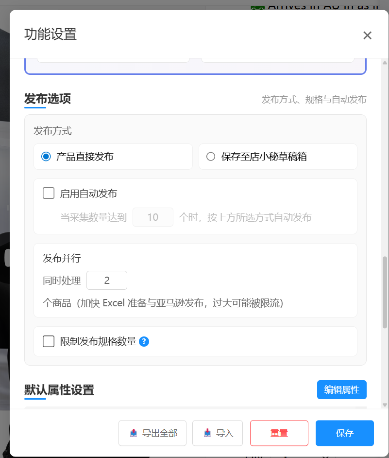
1 2 3 4 5 6- 1产品直接发布 — 默认走侧栏橙色「直接发布」流程，提交到店小秘 / Temu。
- 2保存至店小秘草稿箱 — 默认存入草稿，适合先人工检查再发布。
- 3启用自动发布 — 未导出数量达到设定值（如 10）时，按上方选定方式自动发布。
- 4发布并行 — 同时处理 N 个商品（如 2），加快 Excel 准备与亚马逊发布；数值过大可能被限流。
- 5限制发布规格数量 — 勾选后最多发布 N 个 SKU，可从开头或随机选取（适合规格过多的商品）。
- 6默认属性设置 — 下方「编辑属性」入口，详见图 6。
- 产品直接发布 / 保存至店小秘草稿箱 — 默认发布方式（与侧栏「发布模式」联动）
- 启用自动发布 — 未导出数量达到阈值 N 时自动发布
- 发布并行 — 同时处理商品数（1～5）
- 限制发布规格数量 — 最多发布 N 个 SKU；从开始或随机选取
默认属性 / 亚马逊默认值
功能设置继续向下：预填店小秘必填属性、管理属性统计、配置亚马逊模板默认值。
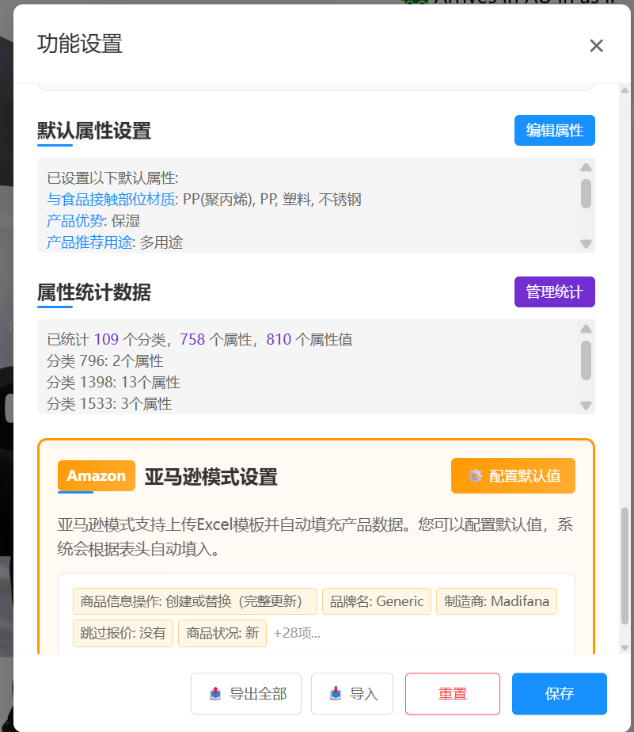
1 2 3 4- 1编辑属性 — 预览并编辑店小秘发布时的默认属性（如材质、产品优势、推荐用途）；发布时优先填入这些值。
- 2管理统计 — 查看已统计的分类 / 属性 / 属性值数量；可按类目管理、导入或删除统计数据。
- 3配置默认值（亚马逊） — 上传 Excel 模板后，系统按表头自动填充；此处预设品牌、制造商、商品状况等固定字段（橙色 Amazon 区域）。
- 4底部四按钮 — 导出全部备份设置 JSON；导入恢复；重置恢复默认；保存写入修改（每次改设置必点）。
- 编辑属性 — 店小秘发布默认属性预览与编辑
- 管理统计 — 按类目管理属性值使用统计；可导入 / 删除
- ⚙️ 配置默认值（亚马逊） — 亚马逊模板字段默认值（品牌名、制造商、商品状况等）
设置面板底部（图 6 最下方）
- 导出全部 — 导出全部设置为 JSON 备份
- 导入 — 从 JSON 恢复（含极鲸云 Token、类目映射等）
- 重置 — 恢复默认；AI 相关选项一并关闭
- 保存 — 写入当前所有修改
半托运费仓库 / 飞书表格
半托运费 · 仓库设置（操作步骤）
功能设置 → 半托运费 / 仓库设置（见图 3绿色按钮）。半托管发布前需为各国家配置仓库与运费模板。
- 选择店铺 — 下拉选择店小秘中的半托管店铺（需先在店小秘将店铺设为半托管模式）。
- 选择国家 — 勾选要经营的国家（可「全部」或展开更多国家多选）。
- 国家设置 — 为每个已选国家指定发货仓库与运费模板（从店小秘同步的列表中选择）。
- 🔄 更新仓库数据 — 从店小秘重新拉取最新仓库列表。
- 保存 — 写入本地；半托管商品发布时会自动套用对应国家配置。
飞书表格配置（三标签）
功能设置 → 飞书表格配置（见图 3蓝色按钮）。三个标签页共用同一套 App ID / App Secret，只需在「基础配置」填一次。
图 7 · 基础配置
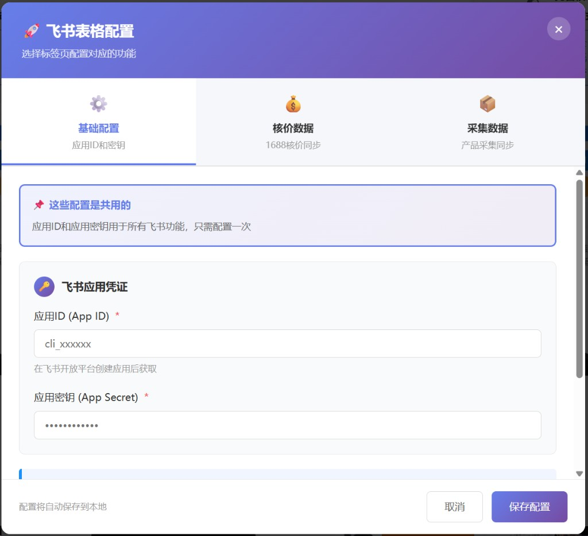
1 2 3 4- 1三个标签页 — 基础配置 / 核价数据 / 采集数据；切换标签配置不同同步功能。
- 2应用 ID — 在飞书开放平台创建应用后获取，格式如
cli_xxxxxx。 - 3应用密钥 — App Secret，与 App ID 配对使用，所有飞书功能共用。
- 4测试连接 / 保存配置 — 填好 App ID 与密钥后，可先点🔗 测试连接验证凭证是否有效，再点保存配置写入本地。
图 8 · 核价数据
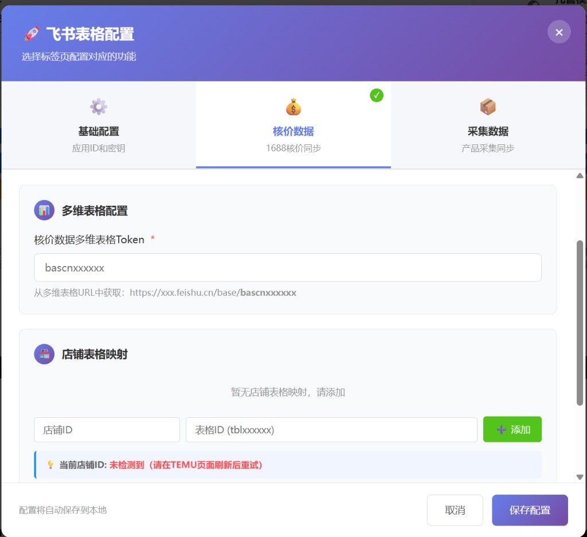
1 2 3 4 5 6- 1核价数据标签 — 1688 图搜核价结果写入飞书多维表格。
- 2多维表格 Token — 从飞书表格 URL 中获取，如
https://xxx.feishu.cn/base/bascnxxxxxx中的bascnxxxxxx。 - 3店铺表格映射 — 填写店铺 ID 与对应表格 ID（
tblxxxxxx），将不同店铺核价写入不同表。 - 4添加 — 确认一行映射后点绿色「+ 添加」。
- 5当前店铺 ID — 自动读取 Temu 卖家页店铺；若显示「未检测到」，请在 Temu 页面刷新后重试。
- 6保存配置 — 保存核价同步设置。
图 9 · 采集数据
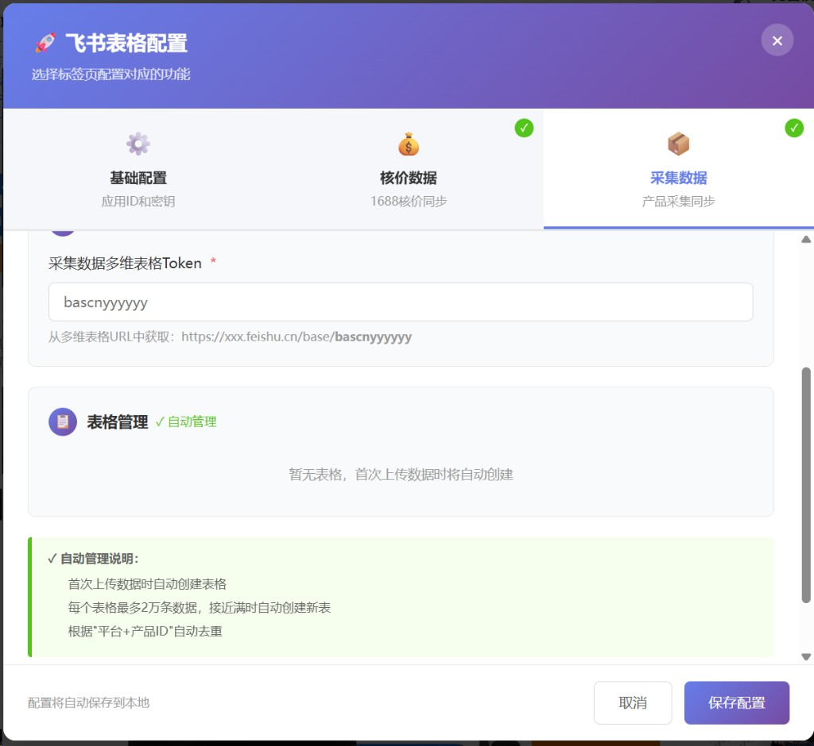
1 2 3 4 5- 1采集数据标签 — 将插件采集的商品记录同步到飞书。
- 2采集数据 Token — 目标飞书多维表格 Token，同样从 URL 中获取。
- 3表格管理 — 显示已创建的同步表格列表；首次上传时自动创建。
- 4自动管理说明 — 每表最多 2 万条，接近满额自动建新表；按「平台 + 产品 ID」去重。
- 5保存配置 — 保存采集同步设置。
其他设置
位于功能设置中部（见图 3 · 其他设置区域），与平台开关、汇率在同一屏。
- 显示申报价格阈值设置按钮 — Temu 卖家页右下角显示阈值浮动钮
- 历史重复数据不采集 — 已采集链接自动跳过（建议保持开启）
- Temu 描述营销增强 — 详情 HTML 差异化 / 季节文案（建议保持开启）
- 扩展调试日志 — 控制台输出 [采集助手] 调试信息
- 立即更新店铺选项 — 同步店小秘店铺列表
AI 模型配置面板
入口：功能设置 → 智能优化区 → 紫色 ⚙️ 配置。首次使用建议从「入门」标签按三步完成：填 API → 选模型 → 保存。
图 10 · 入门（快速上手）
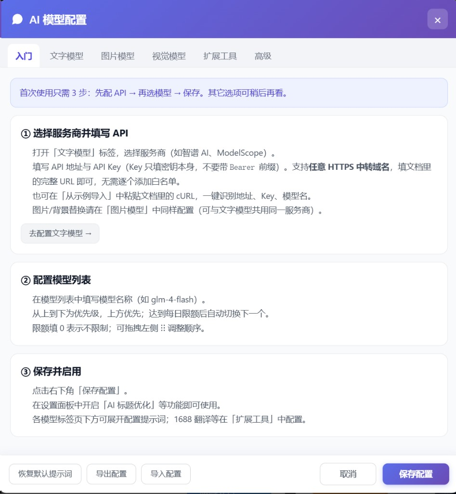
1 2 3 4 5- 1六个标签页 — 入门 / 文字 / 图片 / 视觉 / 扩展工具 / 高级。
- 2步骤 ① — 到「文字模型」选服务商（智谱 AI、ModelScope 等），填写 API 地址与 Key；支持粘贴 cURL 自动解析。
- 3步骤 ② — 添加模型名称（如
glm-4-flash），设优先级与每日限额（0 = 不限）。 - 4步骤 ③ — 点「保存配置」，再到功能设置勾选 AI 功能「启用」。
- 5保存配置 — 右下角蓝色按钮，修改任何 AI 设置后必点。
图 11 · 文字模型
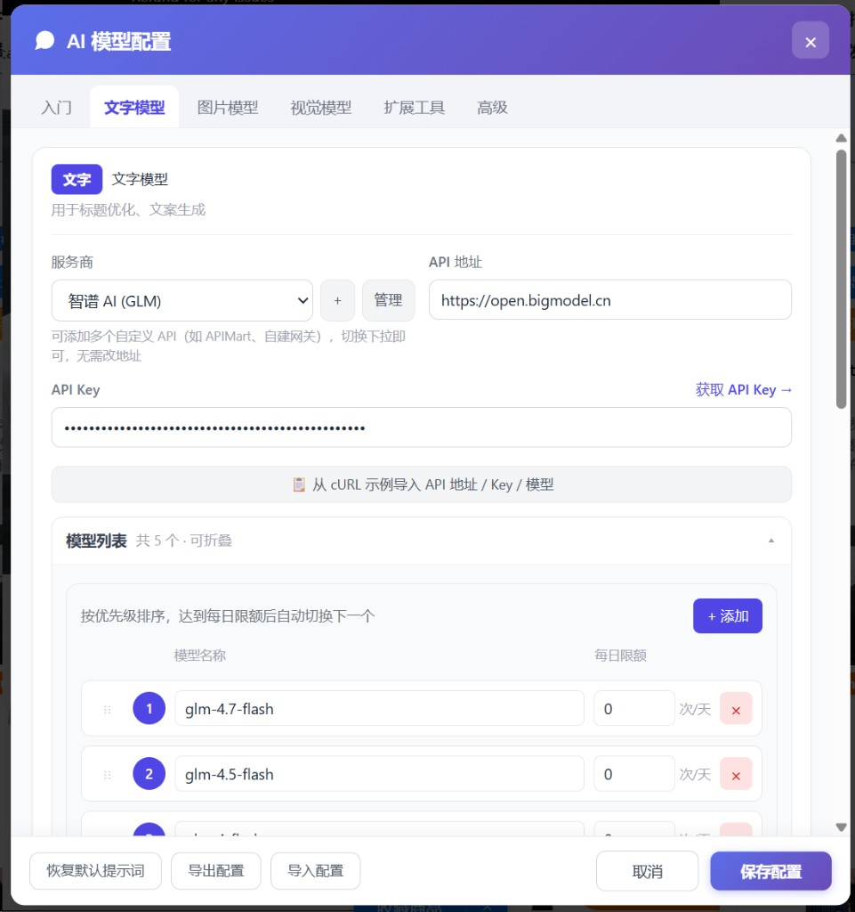
1 2 3 4 5- 1服务商 — 下拉选择智谱 AI 等；可「+」添加自定义服务商、「管理」编辑。
- 2API Key — 填写密钥；右侧「获取 API Key」跳转官网。支持从 cURL 示例一键导入。
- 3模型列表 — 按优先级排序，达到每日限额自动切换下一个模型；拖拽调整顺序。
- 4+ 添加 — 新增模型行，填写模型名与每日限额（次/天）。
- 5保存配置 — 保存文字模型与提示词设置。
图 12 · 图片模型
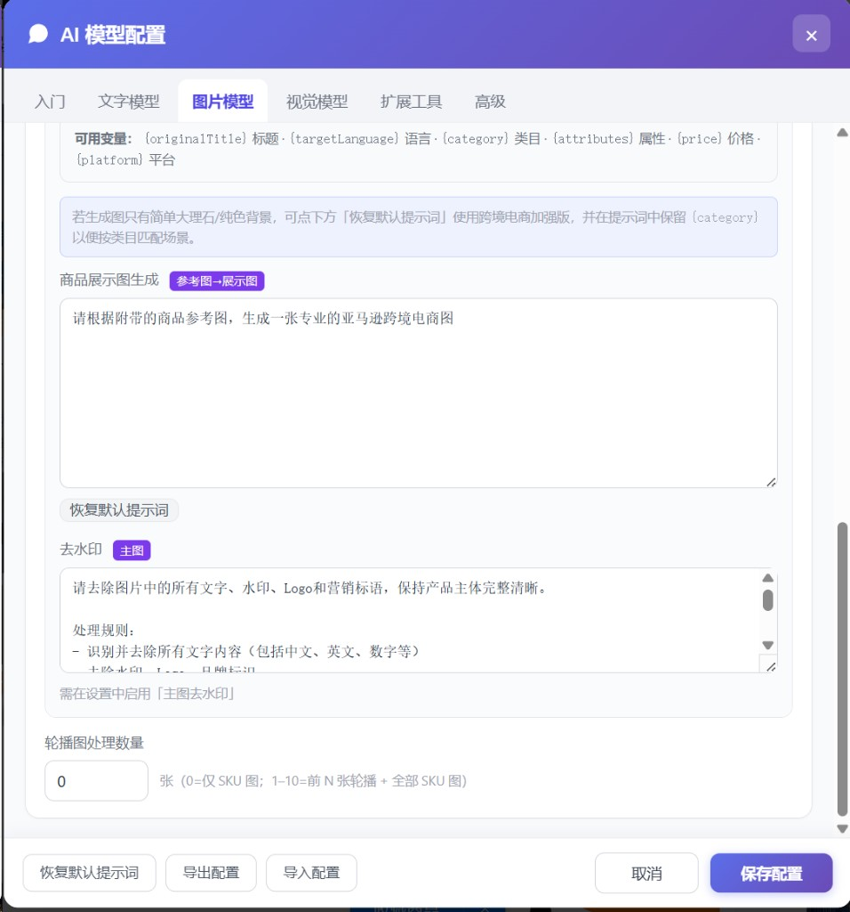
1 2 3 4- 1商品展示图生成 — 参考图 → 展示图的 AI 提示词；用于「背景替换」功能。
- 2去水印 — 主图去水印提示词；需在功能设置启用「主图去水印」。
- 3轮播图处理数量 — 0 = 仅 SKU 图；1～10 = 前 N 张轮播 + 全部 SKU 图。
- 4保存配置 — 保存图片相关提示词。
视觉模型（无独立截图）
AI 模型配置 → 切换到「视觉」标签（图 10 标注 ① 中六个标签之一）。界面结构与文字 / 图片模型相同：选服务商、填 API Key、添加模型列表；无单独截图，可按文字模型步骤对照操作。
- 用途 — 产品尺寸识别：从商品图识别包装长 / 宽 / 高 / 重量，写入半托管等字段（需在功能设置启用「产品尺寸识别」）
- 推荐模型 — 魔塔 Qwen2.5-VL 等支持多图分析的视觉模型
- 提示词方案 — 顶部下拉可切换多套「视觉提示词方案」；支持保存方案 / 新增 / 删除，便于 A/B 测试不同识别策略
- 尺寸识别提示词 — 可编辑识别逻辑；系统会自动附加 JSON 输出格式，无需手写格式说明
- 可用变量 —
{title}标题、{attributes}属性
图 13 · 扩展工具
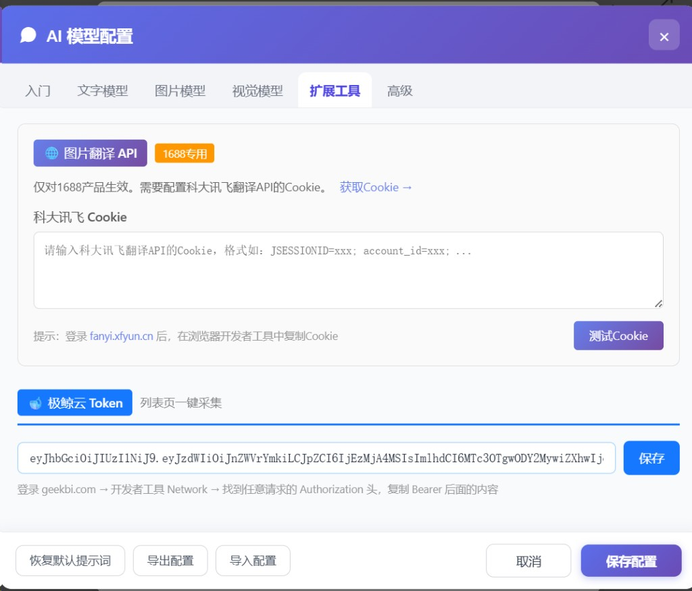
1 2 3 4- 1科大讯飞 Cookie — 1688 专用图片翻译；登录 fanyi.xfyun.cn 后在开发者工具复制 Cookie。
- 2测试 Cookie — 验证 Cookie 是否有效。
- 3极鲸云 Token — 列表页一键采集；从 geekbi.com 请求 Authorization 头复制 Bearer 后内容。
- 4保存配置 — 保存扩展工具凭证。
图 14 · 高级
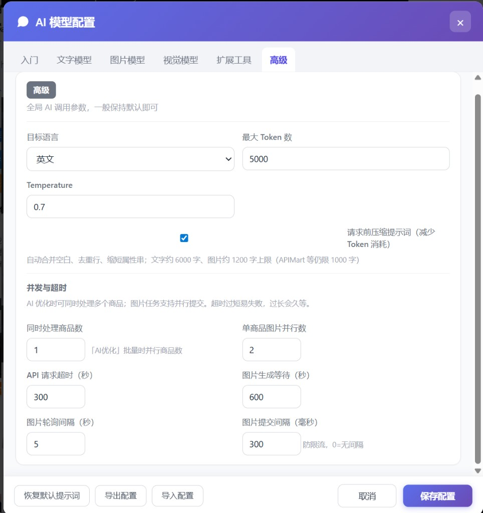
1 2 3- 1高级参数 — 目标语言、最大 Token 数、Temperature；可勾选「请求前压缩提示词」减少消耗。
- 2并发与超时 — AI 优化并行商品数、单商品图片并行数、API 超时、图片生成等待与轮询间隔。
- 3保存配置 — 保存高级参数。
底部通用按钮
- 恢复默认提示词 — 重置各标签页提示词为内置默认
- 导出配置 / 导入配置 — 备份或迁移 AI 设置（含 API Key，请妥善保管）
- 取消 / 保存配置 — 关闭面板或写入全部 AI 配置
提示词方案（文字 / 图片 / 视觉）
在「文字模型」「图片模型」「视觉模型」标签页顶部，各有一套独立的提示词方案工具栏：
- 下拉选择 — 切换当前编辑的方案（如「默认提示词」「方案 2」）
- 保存方案 — 将当前输入框内容写入所选方案
- 新增 / 删除 — 创建新方案或删除当前方案（至少保留一套）
三套方案互不影响：可给标题优化用一套提示词、给去水印用另一套，便于按场景切换。
连接测试
- 扩展工具 · 测试 Cookie — 图 13 标注 ②；验证科大讯飞 Cookie 是否可用于 1688 图片翻译
- 文字模型 · 扣子平台 — 选择扣子（Coze）服务商时，可点🧪 测试配置发送试请求验证 API
- 飞书 · 测试连接 — 图 7 基础配置底部🔗 测试连接，验证 App ID / Secret 是否有效
| 标签页 | 用途 |
|---|---|
| 文字模型 | 标题重写、AI 裂变、亚马逊描述等文案类功能 |
| 图片模型 | 背景替换、主图去水印提示词 |
| 视觉模型 | 尺寸识别（包装长宽高重量） |
| 扩展工具 | 1688 图片翻译 Cookie、极鲸云 Token |
| 高级 | 全局语言、Token 上限、并发 / 超时调优 |
共享选品库 🌐
侧栏标题栏地球图标 → 打开云端共享选品库。
- 搜索 — 标题 / 链接关键词
- 筛选 — 平台、类目、上架时间、价格、评分、评论、导入次数
- Chip 筛选 — 有专利 / 有商标 / 无风险 / 上升趋势 / 排除已上传 / 排除已导入
- 排序 — 综合、销量、评分、价格、采集时间等
- 卡片详情 — 销量曲线、属性、规格缩略图
- 单条导入 / 批量导入 — 导入本地收藏夹（消耗采集点数）
- 全选当前页 — 批量勾选导入
1688 查询 / 商标历史 🕐
侧栏时钟图标 → 历史窗口两个 Tab：
- 1688 图片搜索 — 历史图搜记录、价格统计；商品详情型号图也可发起 1688 搜同款
- 亚马逊商标检查 — 历史商标 / 型号 / 图片检查结果
- 查看详情 / 删除 / 导出 CSV
类目 ID 映射 ↗
侧栏箭头图标，或快捷键 Ctrl+Shift+M。
- Temu ↔ Shein / Temu ↔ 亚马逊 / Shein ↔ 亚马逊 — 跨平台类目 ID 互查
- 关键词搜索 — 按类目名称搜索
- 映射统计 — 类目总数与覆盖率
- 点击复制 — 复制 ID / 路径
快捷键
| 快捷键 | 功能 | 适用页面 |
|---|---|---|
| Esc | 依次关闭：商品详情 → 功能设置 → 侧栏折叠（详见页面辅助） | Temu 采集页 |
| Ctrl + Shift + M | 打开 / 关闭类目映射窗口 | Temu 等采集页 |
| Ctrl + 1 | 显示申报价格阈值浮动按钮 | Temu 卖家后台 |
| Ctrl + 2 | 隐藏申报价格阈值浮动按钮 | Temu 卖家后台 |
| Ctrl + Z | 图片编辑器撤销 | 商品详情 · 图片编辑 |
| Ctrl + Y | 图片编辑器重做 | 商品详情 · 图片编辑 |
| Ctrl + 滚轮 | 图片编辑器缩放画布 | 商品详情 · 图片编辑 |
| Ctrl + 拖拽 | 图片编辑器平移画布 | 商品详情 · 图片编辑 |
申报价格阈值工具
适用于 agentseller.temu.com、seller.kuajingmaihuo.com 等卖家后台。需付费会员（非体验档）
入口：页面右下角「申报价格阈值设置」浮动按钮（可在功能设置中开关显示）。
基础设置
- 利润率阈值 (%) — 达标则自动接受申报价
- 成本价模式 — 自动获取 1688 价 / 固定成本 / 价格差异百分比
- 每次减价百分比 — 利润率不足时逐步降价
- 最多执行次数 / 执行间隔 — 控制自动核价轮次
- 达到最大次数时 — 拒绝申报价 / 跳过不处理
- 开始执行 / 停止执行
定时任务
- 启用定时任务 — 定时一键拒绝调价
- 间隔执行 / 每天定时
- 紧急停止
- 自动移除营销弹窗 — 隐藏卖家中心营销浮层
快捷工具 Tab
- 一键拒绝调价 — 拒绝所有待处理调价
- 清除弹窗
- 待发货列表 — SKC/SKU、换仓、约快递、导出 JSON（见下节明细）
- 备货单列表 — 同步卖家中心备货子单，支持搜索、筛选、批量加入发货台（见下节明细）
- 核价成功数据 — 批量查询、上传飞书、导出 CSV、查看供应商
- 功能设置 — 打开采集端功能设置
- 核价日志 📋 — 核价 / 飞书 / 1688 / 系统日志
- 执行记录 📊 — 自动核价轮次历史，可导出 CSV
dianxiaomi.com) 会自动清理烦人弹窗，不显示采集侧栏。域名限制说明
部分工具必须在正确卖家域名使用，否则会提示跳转：
- 待发货列表 / 备货单列表 — 需在
agentseller.temu.com卖家中心 - 备货单列表 — 跳转备货管理子单页
待发货列表（明细）
- 查看 SKC / SKU 待发货数量，复制 ID
- 导出 JSON — 按 SKC 分组复制 JSON 数据
- 换仓 — 修改发货仓库
- 约快递 — 预约快递相关操作
备货单列表（明细）
阈值工具 → 备货单列表，需在 agentseller.temu.com 卖家中心打开。弹窗与卖家中心备货管理数据同步，便于批量操作。
- 三个主 Tab — 紧急备货 / 普通备货 / 定制品；普通备货下还有「待创建」「待发货」子 Tab
- 搜索 — 备货单号 / SKC / 商品名；支持仓库、类目、超时、今日可发、标签（履约考核 / VMI / JIT）、状态等筛选
- 列表字段 — 备货单号、商品图与 SKC、状态时间线（发货 / 到货截止）、SKU 明细、申报价、库存水位
- 单条操作 — 备货管理、修改数量、加入发货台、操作记录；单号旁 📋 可复制
- 加入发货台 — 「待创建」状态会先自动接单，再校验 restrictionReason，确认后提交；不可加入时会显示原因
- 批量操作 — 勾选多行 → 底部批量加入发货台或批量取消备货单
- 分页 — 每页 10 / 20 / 40 / 100 条，支持首页 / 末页 / 跳转页码
核价成功数据（明细）
- 一键查询全部 — 批量查未查询 SKU 的 1688 成本
- 上传全部到飞书 — 需先配置飞书「核价数据」表格
- 导出 CSV、导入已导出 SKC — 数据管理
- 查看供应商 — 单条 SKU 供应商信息
- 刷新 / 清除本地缓存
核价日志 / 执行记录
- 核价日志 — 筛选：核价决策 / 飞书 / 1688 查询 / 系统；含错误详情列
- 执行记录 — 自动核价每轮统计；刷新、清空、导出 CSV、删除单条
阈值浮动按钮
- 右下角「申报价格阈值设置」可点 × 关闭；在功能设置重新开启
- 运行中显示浮动停止按钮，可紧急停止自动核价
功能覆盖索引
以下为对照代码库整理的功能清单，若某功能未在正文展开，可在此检索名称：
| 模块 | 功能点 | 正文章节 |
|---|---|---|
| 采集 | 收藏商品、列表+采集、多链接批量、抓取当前页、导入表格、极鲸云、GeekBI、链接管理、抓取历史、实时日志 | 采集 · 极鲸云 |
| 侧栏 | 折叠/展开、拖拽宽度、会员、清理缓存、操作说明、齿轮设置、选品库、1688历史、类目映射、回顶 | 侧栏 · 页面辅助 |
| 详情 | 轮播切换、图片编辑、下载、去水印、规格编辑、1688同款、尺码指南、包装方案、半托管字段、亚马逊关键词、保存修改 | 商品详情 |
| 发布 | 单/多模式、四平台托管、草稿/直接发布、店铺多选、固定类目/属性、导出/发布/模板/检查、已导出筛选 | 发布 · 已导出筛选 · 店小秘状态 |
| 批量 | 批量编辑、AI优化、处理失败、导入商品、更新店铺、导出历史、商标检查 | 批量工具 · 导入商品 |
| 设置 | 图片6项、产品8项、四平台倍率、汇率、AI6项+裂变、发布4项、默认属性、亚马逊默认、半托仓库、飞书3Tab、导入导出JSON、齿轮触发条 | 功能设置 · 半托仓库 · 飞书 |
| AI | 文字/图片/视觉模型、提示词方案、cURL导入、测试Cookie、扣子测试、飞书测试连接 | AI 模型配置 |
| 卖家后台 | 自动核价、定时拒绝、待发货、备货单（接单/加入发货台/取消）、核价数据、日志、执行记录、一键拒绝、清弹窗 | 申报价格阈值 |
常见问题
无法访问 Temu 前台
- 侧栏「清理缓存」→ 关闭所有 Temu 标签 → 重开 www.temu.com
- 仍失败：开 VPN 后访问；清理后可能需重新登录
验证后无侧栏 / 无齿轮 / 双面板
chrome://extensions/重新加载扩展 → 刷新页面
点数 / 极鲸云用完
体验档 20 点/天、极鲸云 5 次/天，次日重置；或输入更高档位验证码升级。
发布失败
- 检查店小秘 API 与店铺；点「处理失败」看原因
- 固定类目 / 补全默认属性；减少单次发布数量
体验档提示「请开通会员」
卖家后台阈值、部分高级工具需青铜及以上；采集侧栏基础功能在体验档可用（受点数限制）。